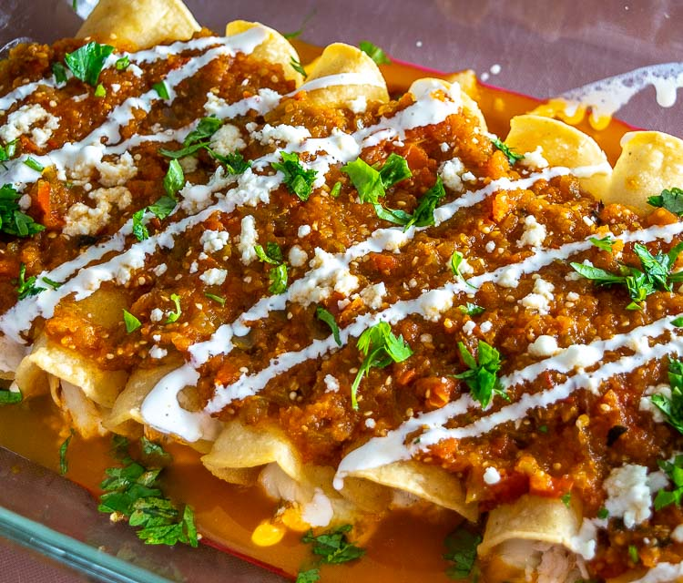

Enchiladas

A great option for dinner! It might take a while to cook, but it's totally worth all the hard work!
Please take the time to look below and see how to create this delicious dish.
Ingredients
- Tortillas
- Cheese
- Ground Beef
- Garlic
- Water
- Enchilada Sauce
- Cilantro
Steps
- Cook ground beef.
- Roll beef in tortilla.
- Lay the rolled tortillas in a dish.
- Cover with sauce.
- Put in the oven and cook for an hour at 350 degrees F.